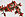

Заглавная страница


|
||||||||||||
Избранная статьяИстория османского Стамбула охватывает период от захвата Константинополя турками 29 мая 1453 года до упразднения Османской империи в 1922 году и переноса столицы Турции в Анкару 13 октября 1923 года. Почти пять веков Стамбул был столицей огромного государства, сложившегося в XIV—XVI веках в результате завоевательных походов турецких султанов. Границы Османской империи охватывали владения на трёх континентах — в Европе, Азии и Африке. Таким образом, древний город на берегах Босфора вновь превратился в политический и экономический центр мирового значения. Постепенно Стамбул вернул себе славу и крупного пункта международной торговли. И хотя важнейшие торговые пути переместились из Средиземноморья в Атлантику, черноморские проливы продолжали оставаться оживлённой торговой артерией позднего средневековья. Кроме того, Стамбул приобрёл значение крупнейшего религиозного и культурного центра мусульманского мира, вобрав и переработав многое из культуры сельджуков, византийцев, арабов и персов (от Константинополя Стамбул унаследовал и резиденцию Вселенского патриарха — первого среди православных патриархов мира). Город представлял собой уменьшенную модель Османской империи, с её пёстрым в этническом и религиозном плане населением. Наибольшего расцвета османская столица достигла в период правления Сулеймана Великолепного, именно к «веку Сулеймана» восходит большинство восторженных описаний Стамбула европейскими путешественниками и дипломатами. (далее…) Хорошая статьяЛибий Север (лат. Libius Severus) — император Западной Римской империи, правивший в 461—465 годах. Либий Север был провозглашён императором в ноябре 461 года по воле всесильного полководца Рицимера, некоронованного правителя Италии. Никакой реальной власти он не имел и ничем не проявил себя во время правления. Либию Северу, однако, не удалось получить признание императора Византии Льва I Макеллы. В конце лета 465 года (по всей видимости, 15 августа) он скончался (возможно, отравлен по приказу Рицимера). Источники, рассказывающие о Либии Севере, весьма малочисленны и скупы на подробности. Он происходил, согласно немногочисленным сообщениям античных источников, из Лукании — области, расположенной на юго-западе Апеннинского полуострова. (далее…) Избранные списки и порталы
|
Знаете ли вы?Из новых статей Википедии:
Текущие событияКризис на Украине (Крымский кризис • Русская весна) • Война в Сирии • Выборы (Турция, Мальдивы, Украина)
В этот день — 30 марта
Совместная работа неделиПриглашаем всех желающих принять участие в работе над статьями о произведениях Максима Горького и о кинопремии «Империя».
Примите также участие во  «Второй Неделе праздников в Азии». Примите также участие в |
|||||||||||||||||||||||||
Родственные проекты
|
||||||||||||||||||||||||||
{kind=link}
{kind=link}
{kind=link}
{kind=link}
{kind=link}
{kind=link}